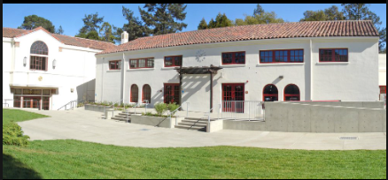

I attended piedmont high school. And plan to attend this high school for the next 4 years. When i was little i never attended pre-school.
Even though books are my least favorite thing to do I still believe it's a good idea to put them on here.
And friends. Friends are a huge part of learning and they are a huge part of high school.
Some Projects I have done in Joy of Computing are. The Pyret Data Analysis where we would plug in data and look at the graphs that we would code. Another project that we would do is make apps on App Inventor then we would look at the apps on some tablets. And finally we made a video game on scrath as our final project for the first semester. 